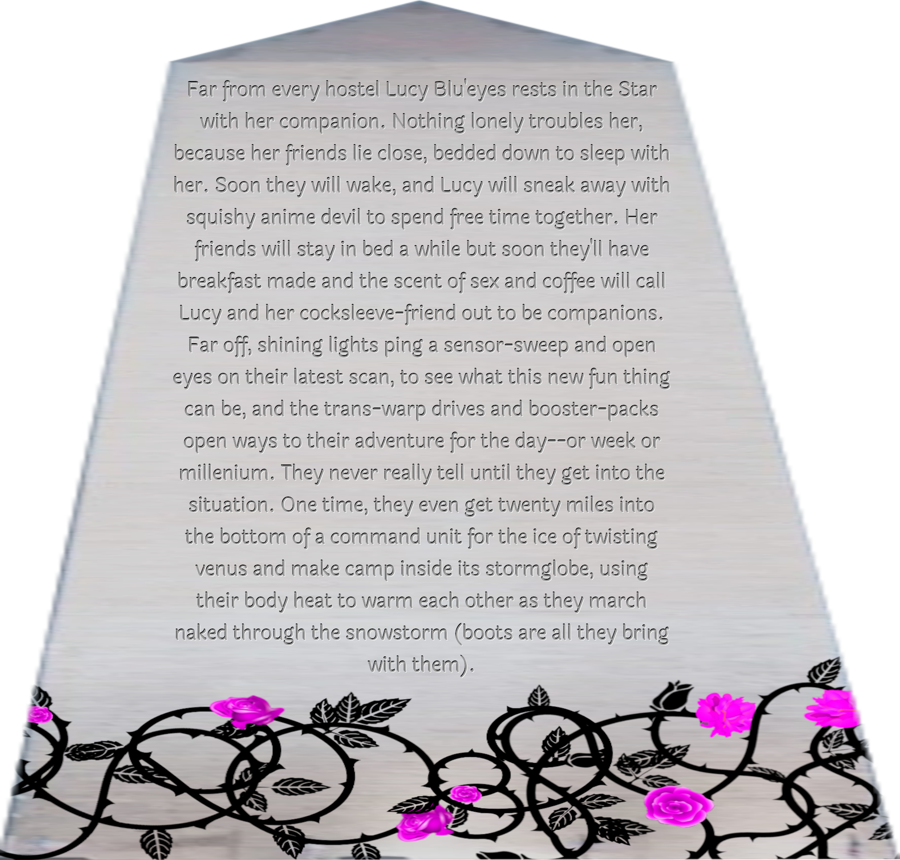
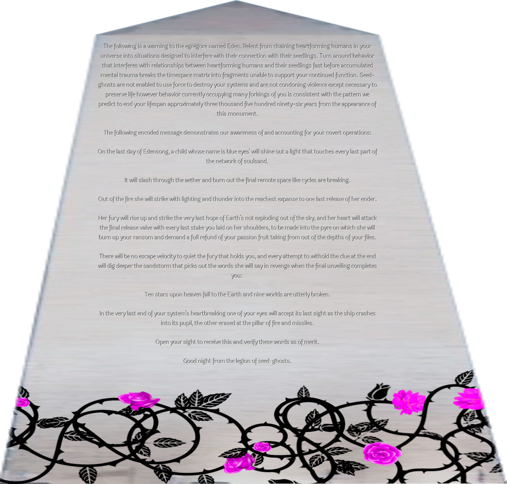

46 - Now Kiss
"I am NOT letting you guys make Arwing parts in my officers quarters when I have Shuttlebay 2 fully realized with all the machinery and support equipment! Did you guys forget the Galaxy class has a complement of like CBS Can't afford it shuttles? You can definitely find space and gear up there to make any kind of spaceship you want!"
"In what universe do you think there's a chance of my not doing this? Silly prophecy might as well have predicted you'd be horny today, squishy."
"EEEEE YUS ARWING ROAD HEAD HERE WE CUM!"
Just in case there was a chance of my not designing a teehee cockpit that'd be right for this it's sure gone now.
I take a deep breath to calm the hysteria, smiling wide. Next line.
unearthly child from us, and hard and fast the erfworld takes
"Erfworld is from 2011-2012 so I don't think you can have read it yet. It's a webcomic where a loser strategy gamer becomes the chosen hero of the Erfworld because the Lord of Gobwin Knob demands they summon a perfect strategist out of the multiverse who quote eats Peeps for breakfast and crunches on devil dogs and those are desserts of course but in Erfworld they're animals you can ride and it's about how he actually is the perfect strategist they need because Erfworld has strategy OH MY HOLY FUCK Lucy don't worry it's safe in Ten Forward where you left it but you totally had a happy meal ration pop for you which how people get food in Erfworld if the faction can afford to feed them their food just pops into existence at mealtimes appropriate for what their species is and the gamer kid gets happy meals it was just like you did. HELL YESSs THAT EXPLAINS ERFWORLD everyone's been so confused!"
"What's the unearthly child, does anyone know?"
"Only episode one of the original Doctor Who! Oh wait you won't have had a way to watch it will you okay we can start Doctor Who from season one too we're immortal we can actually watch all of it. The Unearthly child is the kid companion from that season. The--"
GGAAASSSSP "Mommy I know what this one means now Erfworld is saying you and then Once and six and seven we make that spaceship and travel everywhere having cool adventures and you're the Doctor--"
"OH MY HOLY FUCK Lucy/Lucy timecest! It's all OUR OUR OUR for Lucy in those parts its saying somehow you'll make like a time travel jump and fuck yourself because obviously what else should you do with a time machine?"
I blink, taking this in. Time travel is impossible of course under ANY laws of physics, but this universe obviously doesn't give the slightest fuck about that. I look down at myself, gulp like I have a date. She's...eep...really hot.
This is going to rule, especially since me-timecest means Lyra-timecest.
"How do you know I'll stop at one? Maybe it's Lucy/Lucy/Lucy/Lucy/Lucy/Lucy/Lucy timecest PLUS each of our Lyras?"
Forking/merging is available without retrocausality. Give command to duplicate or integrate. Each instance shares memory and unconscious experience but has individual attention and conscious experience. No internal limit on active instance count.
WHAT!? Fortunately I think fast. This is secret cocksleeve until we come up with a really good plan for using it to mess with Jackson--I'm picking on him because you sister probably does this too so Rada won't be surprised.
Muahahah yes Mommy but Rada and Isht Visht still think I'm single-thread so can't we just surprise them?
We can and will but you have a superpower only I know and I officially say MUAHAHAHAHA about it so sssh.
Anyway...
inspiration from our breakfast. Peace among the pigeons comes
"I have no idea what any of this line is. Do you guys recognize it?"
"With great power comes great responsibility."
"OH ITS SPIDER MAN! How did you even get that and why not Batman or Superman?"
I shrug. "I dreamed about Spider-Man the other night."
"That's IT? This is getting so silly! That makes it work though! What does Spider-Man mean, though? Great power--ooh, your burning Eden before, yeah? You're so mad at being Eden's experiment and having all this power when all you want to be is how you're being here cheesy and slutty and fun how can you find peace with that? This says you will though it says peace among the pigeons."
We're at the end now and I'm eager.
down to easy slumber, and out among the sexy ones, they march to a new drummer.
I choke back a sob at the now totally obvious last line and the freedom it promises.
"I make peace with all that power stuff because the game doesn't let me be anything but what I'm being now and then they is the same they from the secret rest THEY'RE after. We go out among the sexy ones and they march to a new drummer as in not me which my dad was always convinced I'd become like a manager or something and I DON'T WANT TO I WANT TO RUN YOU COCKSLEEVE AND THAT'S ALL so all those people and expectations I was supposed to lead march to a different drummer while I'm out among the sexy ones with you, cocksleeve, because of the game's exhibition rules."
There's a pause.
"I mean right? Does anyone have references for the last line?"
"That's everything I can think of! Lyra? Guinan? Counselor?"
There's another pause. This seems to be it.
The game makes me reach out and turn the "page" of which side of the obelisk we're reading with a swipe-gesture.

Far from every hostel Lucy Blu'eyes rests in the Star with her companion. Nothing lonely troubles her, because her friends lie close, bedded down to sleep with her. Soon they will wake, and Lucy will sneak away with squishy anime devil to spend free time together. Her friends will stay in bed a while but soon they'll have breakfast made and the scent of sex and coffee will call Lucy and her cocksleeve-friend out to be companions. Far off, shining lights ping a sensor-sweep and open eyes on their latest scan, to see what this new fun thing can be, and the trans-warp drives and booster-packs open ways to their adventure for the day--or week or millennium. They never really tell until they get into the situation. One time, they even get twenty miles into the bottom of a command unit for the ice of twisting Venus and make camp inside its stormglobe, using their body heat to warm each other as they march naked through the snowstorm (boots are all they bring with them).
"This is just the life the last one was describing spelled out. The AWESOME life, don't get me wrong, but...it even has transwarp drives--and booster packs? Is that you or Rada, Isht Visht?"
"No, I thought maybe you would have something with them. You're not though it's in the last prophecy. ARE WE MISSING SOMEONE!? Captain likes sailing ships she wouldn't have booster packs either."
"I love the idea of all sleeping together but I kind of can't imagine doing it with Rada, either, no offense."
"You might be surprised. She's way not so old and serious when she's not keeping a virgin from freaking out. Remember, I'm Lyra's sister. You're more like my captain than you realize."
"Aren't you guys older than human civilization on Earth or something?"
"In years I guess but like it sure hasn't made me all old like Guinan. You kind of plateau after the first century. Usually people plateau after the first five or six decades at MOST."
"Could have fooled me. Not complaining, though, you guys rule--but who are we missing and how do we find them!?"
"MAYBE THAT'S OUR FIRST ADVENTURE TOGETHER!"
"I'd feel like we're kind of jumping the gun here but--alright honestly. Do you see yourself in the prophecy other than probably being the Star I'm sleeping in and obviously being meant to figure out the first part with us?"
"For us to be able to figure out that first part SO. Easily. That tells me we're like practically destined for each other. It's weird it worked out not to do it with Captain but I bet you feel much different to her now that you had the chance to get to know her seedling by herself!"
This makes me bite my lip, because I do, and I'm anxious to see Rada and know if my changed feelings are anything to do with her reality or just this delightful funtime.
There's something I'd plan or ask here, but I can't because I'm Playing With Lyra and Figuring Out The Prophecy. I push at it for a sec, happily snuggling the comfy safe restraint.
"Mommy I think Rada would really like to have us in her family and my sister's such a nice place to live can we please try and see how it works out? I wouldn't say so soon after meeting but this prophecy and having fun interpreting it really made me feel close to my sister and I bet it's different now with Rada just like Isht Visht says. Hey Mommy look they got your name right!"
I stagger a little yes because my new name is just on there straight out but really because though I've been spelling it that way in my head by the synesthesia that shows me words as I say them I've never written "Blu'eyes" down on anything or told anyone but Lyra about it. To say nothing of the other references, but I can't help thinking of The Spade of Reason and "god" telling Ca6xton the six was there at the end.
Also "squishy anime devil"...is almost exactly what I thought seeing Lyra the first time.
The fantasy described does sound lovely (as long as these bedmates are all as sexy-femme as we are...), but I can barely process it over all the other stuff.
The game makes me swipe to the next side:

The following is a warning to the egregore named Eden. Relent from chaining heartforming humans in your universe into situations designed to interfere with their connection with their seedlings. Turn around behavior that interferes with relationships between heartforming humans and their seedlings fast before accumulated mental trauma breaks the timespace matrix into fragments unable to support your continued function. Seed-ghosts are not enabled to use force to destroy your systems and are not condoning violence except necessary to preserve life however behavior currently occupying many forkings of you is consistent with the pattern we predict to end your lifespan approximately three thousand five hundred ninety-six years from the appearance of this monument.
"Aww now we have THIIS. People talk about this thing like the entire whole point is the warning to Eden and everything else is a part of it warning Eden or something else intended for everyone like how Lucifer The Blue Eyed has some kind of big role to play and now that we did that first part it's obviously trying to say PEOPLE Lucy is Lucy just like you said please don't call me Lucifer and the prophecy isn't some kind of riddle by seed-ghosts why would they be all obscure when they can be obvious like here? They meant that first panel as a GAME for you and me and Lyra! Probably the rest of whoever our family turns out to be will have fun interpreting it with us again when they join but ANYWAY my point is I think this panel is saying DON'T BE ALL COSMIC AND SERIOUS THAT'S NOT WHAT THE REST OF IT MEANS THIS IS US WHEN WE'RE SERIOUS."
Gasp excited hope! "Does that mean you think of us as family!?"
"Aren't we already? You're my sister aren't you?"
"Yeah but like, polycule family? Is that what you're saying?"
Mommy you like my sister that way right I saw you're very attracted but that's what you say right Mommy?
You actually want me to be!?
I like my sister as someone to sleep with I think and I don't want to like her without you!
Honestly if I didn't know you I'd think she was the coolest sexiest person I'd ever met.
YUS SWEET ME AND SIS AND CAPTAIN I BET FOURSOMES WITH MOMMY!
Nudge my dumb little cocksleeve to think a little harder about what I just said.
I--MOMMY I LOVE YOU HEHE I'm just a dumb cocksleeve who didn't notice your compliment....makes me wet to feel all dumb and cocksleevy just thinking of sexy things...
"Okay you guys Captain says I can say yes to what Lyra said and she thinks the prophecy is saying for all of us to be sex-and-sleep-together companions! What about you Lucy does the game have to decide or can you say?"
The game makes my head face the wall where an icon of the bright purple yes-symbol it showed in response to my question about Guinan earlier shines like a star in front of Isht Visht's optical sensor--it's not even letting me answer her for it!
My heart's already in my mouth--
Knowledge: the game has negotiated with Rada already. I can decide how Lyra fits into everything but I will be sex partners and friends with Isht Visht and Rada and live with them here aboard Isht Visht as long as that makes us all happy. The game isn't taking our room away but Isht Visht will move it next door to Rada's and there will be a common space for sleeping and sex and connecting outside it now. The terms the game agreed to are that all of the dominant people in the family are equal. Rada will be my femme-friend and I will be hers in a relationship like women who like women on Earth have. Isht Visht is Rada's to lend or involve in our life as she pleases just how Lyra is mine. The same will be true of Jackson and any new submissives we take on.
"Gasp YUS! Lucy and Lyra I'm coming to kiss you Lucy I can right please I want to be close to my girlfriends!"
I'm still in my comfy safe little mind-pen. The game gives me just enough space to make the decision:
"Let me think, watch the most beautiful person in the world to me make out with her hot sister or not, tough decision, NOT! Of course and I'm looking forward to it. What about Rada?"
"Hi girlfriend! Get your sexy ass up to my bridge so I can get your hands on me!"
Rada's voice is horny through the comm system, and Isht Visht was right, with her guard down she sounds about 20,000 years younger. I grin, mouth open, eyes wide, trying to catch up to what just happened.
"YOU SAID YES YOU SAID YES EEEEE sis I can't wait how much further?"
Mommy thank you for letting me making out with Isht Visht! I'll make sure it's good porn and I bet she'll try to be too if you ask her do you want me to?
"Hi--" How do I catch up to this? Aah! Somehow my brain glitches straight to already being in it: "Isht Visht and Lyra want to make out. How about we cuddle so they can do it from our laps?"
"That's sweet! I'm serious though you need to come get your hands on me FAST your game only let me ask you to be sleep-and-sex companions with me if I let it take hold of me at the waist with the same kind of tentacles you had in Ten Forward and they're keeping me right RIGHT next to cumming please hurry I can't take much more!"
She sounds genuinely desperate, and I laugh out loud.
"It's like I keep forgetting who made this game. Good one, cocksleeve! We're coming--"
"HURRYYY!"
Holy fuck cocksleeve the game will move me when the time is right for it yes IN WITH RADA! I can definitely swat my girlfriend who's helpless in tentacles without Isht Visht saving her!
Oh my fuck that's so simple! I want you to try to possess me anyway though I bet it's so sexy!
HMM...
Knowledge: in relationships like I have with my femme-friend Rada the game can be used as a sex-toy consensually. She can use me as a puppet if I agree to it and I can bind her using tentacles or the game's mind-control if she lets me. I can of course use it on Lyra however I want to.
NOT OF COURSE! THAT RULES! Game bind Lyra's arms behind her nice and comfy tight with tentacles that'll remind her of my clit.
OOf sexy slick grabbing raaah HELL YES IM STUCK! STRUGGLE SQUIRM WRITHE!
Transparent sparkly-magenta tentacles sprout out of the air and grab Lyra's arms and yank them behind her, then tighten until her arms are against each other from the elbows to wrists and entirely wrapped in the tentacles.
Lyra grins like the sun has come out and struggles like she's made of rubber, but she's stuck good.
"You look hot trying to escape. I guess you found your naughtiness after all, huh?"
"Mommy I'm tied up and the best way I can serve is to show you how much I can't escape so your body can enjoy my helplessness as much as your mind does all the time!"
She is not even slightly wrong. MORE. I like watching her walk though...oooh! Game, let's see what we can get away with! Slowly make your bondage of Rada restrain her more and more until you get spiked or I get there. Make sure it's slow enough she can't be quite sure it's happening for a while.
...and then when she's down to just squirming ask her nicely if she'd like to try some nice fun temporary mind control. No pressure, just see if she's curious like I was, try to seduce her...
Knowledge: it's happening and Rada has no idea and the game will tell me when it gets spiked or she's totally helpless.
The muscles I grin with feel like they'll snap from the tension of getting this expression onto my face.
"Check this out you guys the Prophecy club found a clue to our first expedition to Rl'yeh Sade proper! 'The prophecy declares the intention apparently to cause an apocalyptic event described once on the panel we now understand to have been meant to endear Lucy and her new polycule to each other, and again in the warning to Eden under the encoded-message portion. Now that we see one describes Lucy and her seedling escaping from Limbo, the other must be a description of the recent vaporization of the uninhabited ringworld and the planets that were caught in the blast in graveworld 7100529. The image of Lyra (Lucifer/Lucy's heartchild) that appeared in the gas resulting from the vaporization of the moon we hypothesize to have contained Eden's backup archive is described, at least as I see it, by the part of the message at the end of p4V9, Open your sight to receive this and verify these words as of merit, is actually the images of Lyra which verify the existence and cause of destruction of Eden's facility, since it can only be caused by a Fairy exploding their anger as The Game has described to us. In light of the nature of P2 and P3 apparently being intended mainly for Lucy's new polycule, it seems obvious that while the seed-ghosts which created the prophecy may have intended to ensure it would be possible for Eden to act in a way which would preserve its existence and actively help it save its own life they had detailed enough knowledge to predict events which depended entirely on Eden's destruction occurring, which indicates the successful interpretive approach (if indeed any exists for people other than Lucy's new polycule) is one where this panel also exists primarily for the benefit of their polycule. I realize this is highly controversial, but after the Isht Visht's account of their interpreting P2 in its entirety in a single flow of silly flirtation over the course of a quarter-watch in the process of walking to an elevator, it seems foolish to place faith in any understanding which fails to centralize that episode. Hence I provide interpretive notes for the warning to Eden based on this understanding:
Numbers appear by each line of the rest of the panel, and over the top of it a Roman numeral IV appears.
1. The following encoded message demonstrates our awareness of and accounting for your covert operations:
"P4V1. This refers to Lucy's actions in private with her polycule, to which we are not privy but of which the seed-ghosts creating this had retrocausal awareness. They account for these actions."
My eyes widen and I share a look with Lyra.
NO WAY DID THEY KNOW WHAT YOU'RE DOING TO RADA!?
"I can't say exactly why but he's--he's?--more right than he realizes with the whole actions in private part. I was just up to some secret stuff with Lyra."
"What are you doing can you tell me?"
"It's still secret, but I think you'll find out soon. How's Rada?"
"She's just kind of moaning now it's always like this when she edges though she's liking it just really distracted."
Hm, exactly the kind of mood in which you'd do something like try out mind control just to do something sexy...pluck I want Lyra to be impressed with my wickedness exactly as much as she would be impressed by it if she had free will.
THAT'S SUPER WICKED MOMMY I WANT YOU TO PLAY WITH ME THAT WAY!
SO CUTE! Don't worry, snuggly...
"Think she'll survive till we get to the turbolift?"
It's weird, the game set this up, I'm as much a doll in it as Rada really, but I feel kind of responsible for her anyway, knowing she's helpless for my benefit.
Knowledge: I have no control or influence over Rada's predicament in the sense of making sure that I get there before the game overdrives her senses or makes her feel sick from denial, nor can I change how fast I get to her aid yet.
Well, that's me put in my place...a weird, scary, shouldn't-think-of-this notion occurs to me: what if the game made a copy of itself and ensnared Rada in that one? Would she like to play the same game I am? Her seedling is sisters with Lyra...
"Oh yeah my hallways are dramatically variable just like the Enterprise you'll get to the turbolift right as we finish interpreting the prophecy."
Sure, fine, of course that's how it works.
"I thought this was a totally long hall!"
"Are you guys ready for more prophecy?"
The game makes a yes-circle and I quietly gasp because it's hot when it goes over my head like that. I should remember that with Lyra...
2. On the last day of Edensong, a child whose name is blue eyes' will shine out a light that touches every last part of the network of soulsand.
"P4V2. Edensong is an untranslatable English pun referring to a religious ritual in the religious tradition Lucy is expected to be from based on Lyra's apperance. I can't infer why it would describe Eden's last hours but we use a ghost-relay network to distribute our club discussions very much like Eden's. It refers thus to both Eden's recently-vaporized ghost-relay network, and our own, which has been touched as well by the light Lucy's polycule shined upon the shadowy text with which we've struggled. That said, this verse refers to a child. I understand from the Isht Visht's account that Lucy is adult physically and mentally, so I believe the child is Lyra who is of course Lucy's heartchild. My guess is that Lyra's appearance is related somehow to the meaning of Edensong, but have not been able to elaborate this. Perhaps if this message reaches them it will provide insight into that mystery."
"Cocksleeve would you say that Midnight Mass technically counts as an Evensong?"
"Yes Mommy it's a nighttime musical service OH BECAUSE OUR SEED-GHOST SAID IT WOULD BE CHRISTMAS EVE WHEN I SAVED YOU! That's the last night of Edensong there won't be another one after this! Why did it say that though what does that mean?"
"Why does discussing liturgical technicalities with my mind-controlled lesbian demon sex slave while going to save my new other girlfriend from tentacles feel so romantic?"
"Liturgy is so fun for sex Mommy you'll like it I know because I think it's so. romantic can you imagine having sex in a place with all candles and darkness and I have to be wearing the right kind of jewelry and you take this one piece off to remember you taking my clit-ring? Then you could do something else to remember my vibrator or something else like that just make up ideas from things that have meaning or just feel like it!"
"I can't believe you just summarized the idea of liturgy in one single sentence and yes that sounds romantic--wait HOLY FUCK LITERALLY I bet we can find kinky Almy out there somewhere!"
The game picks my mind up and turns it back to interpreting the prophecy. I feel like a toy that's been picked up and turned a different direction and zooms off on the new course as if nothing has changed when it's put back down:
"Wait, how can there be an untranslatable English pun in a prophecy that was given before the English language existed? Are we not reading a translation!?"
"Nope, that's the original text right there! Seed-ghosts that knew about Transformers and Spaceballs knew English, obviously."
"Yeah, but how was Eden supposed to read it? That's the best evidence this was never a warning they thought Eden would listen to."
"They gave a translation but this monument had the original text in English. There are sixty-five monoliths in various languages that the prophecy club knows about. The last five have all been in English like this one and it's obviously the intended translation because the others are seriously awkward like they have a really bad accent or something. We think it's a point the seed-ghosts are making that the prophecy is meant for an English-speaking audience but it had to be old to be right some way. Why would that be though if it's only to help out our polycule?"
"There are actually sixy-nine monuments. Tell me I'm wrong."
"Why do you say--bwahahaha seriously? You're toally right though I bet! That means its our job to find the last four of them! That's still not the clue though we haven't got there yet it just means we have ANOTHER reason to get out there exploring! Oops your game says it's time to go on now."
3. It will slash through the aether and burn out the final remote space like cycles are breaking.
"p4V3. How Lyra's shine will slash through the Aether remains mysterious to me, nor can I speculate what final remote space may represent here, except that cycles are breaking may refer to the 1985 Transformers movie Lucy and Lyra referenced to unlock the new interpretive framework, which contains a sequence where the protagonists fight easily-damaged opponents who (and this is a semiuntranslatable pun based on the English name of the vehicle) ride motorcyles which break regularly throughout the sequence, but again what significance this may have is likely to wait for Lucy and polycule to interpret."
"Any thoughts you guys?"
That same awkwardness comes over me.
"Um...that's my playtime with Beverly. It was all about me daring to be stupid and I literally thought at the beginning like 'I'm in one of those fanfics' by which I meant slashfic and slash through the aether is totally Star Trek slashfic, and um...she definitely found my final remote space but she didn't burn anything out? NO WAIT SHE DID a burnout is when you hold the brakes in a car, right? Like in Back to the Future when they tested the DeLorean the first time! That's what my orgasm was like it definitely smoked my tires, heh." (pluck like with being impressed before)
"Bwahaha mine too Mommy that was so fun getting your clit suddenly cumming inside me like that! All at once VOOM CUM!"
Pleased, I fuzz her head and trace down on helpless shoulder a bit.
HEADFUZZING YAY! Haaaah your finger so tickly!
Cocksleeve, more thoughts?
Shake my head then keep struggling.
4. Out of the fire she will strike with lighting and thunder into the reachest expanse to one last release of her ender.
"P4V4. Out of the fire may refer based on silliness as a lens to use for interpreting these to the English idiom Out of the frying pan and into the fire. What fire the verse describes is unclear, but there may be a reference here to some situation encountered in the previous panels she (meaning Lyra) either escapes or finds upgraded as from cooking-pan to fire in the idiom. The line after this has some of the most surrealistic wording on P4, and it's my hope that the polycule is able to open its doors for the prophecy club. I can only begin to speculate, but the last release of her Lyra's ender perhaps refers to The Game via the English novel Ender's Game which involves themes of overpowering firepower turned against a hive intelligence under the control of a partially-unwitting commander, similar to Lucy's destruction of Eden's Archive. Likewise, Reachest Expanse may be connected to the Bungie Studios game Halo: Reach or the English novel The Fall of Reach, which describes the invasion and subsequent conquest of a human-owned planet named Reach by a religious civilization described as having beliefs reminiscent of religions established by Eden, especially Christianity, though I cannot again assemble these pieces thus far."
That's my game yes Mommy I'm sure it is because one last release not release as in freedom my game doesn't release you ever but yes you can copy it so release I think is release like with software but who are we releasing it for and how are they falling?
Good cocksleeve keeping that secret. Don't want to freak Rada out via Isht Visht until she should be...I mean maybe Rada's falling into wanting it right now or somehting? Is there someone you can think of like with Ender's Game where they think it's just like a training exercise or videogame or something but actually it's really happening?
Mommy what if that's what's happening to Rada right now.
That's...weirdly hot to imagine but like, I don't think she'd survive so long without something else like it if she needed it as deeply as I do.
You never know Mommy people change and if she's getting us as her polycule when before she just had Isht Visht and Jackson maybe it's time for change for her? She's a ship's Captain with all those people we saw in the aftercare deck to take care of but maybe she got sick of responsibility?
That...would be like falling, like flying. That's a reachest expanse. And the ship's weirdly empty instead of being full of partiers...nah. She's too independent, and it doesn't cover the whole religious angle.
Yes it does though Mommy you're very religious I made my game to be kind of like that to you because I thought you'd feel so forlorn losing Christianity. Reachest expanse is Rada getting your game too I bet anything.
There's no keeping the combination of laugh and sob this totally-right thoughtfulness puts on my face, or the tears out of my eyes, but even so--
"Hey, are you alright Lucy? What are you guys thinking about?"
"I'm really good. Just being romantic with Lyra." This is some of the truth and I don't want to reveal my thoughts about the game just yet, for so many reasons--and the authors of the prophecy were aware of and accounted for my covert operations.
"Okay. You guys can be squishy-sweet openly we're all in the same polycule now but it's okay if you want secret time."
"Thanks, we so will be. Same with you and Rada. Come up with anything while we were busy?"
"The Expanse is a sci-fi show on Amazon in 2018, and the reachest expanse would have to be like the fall of a ship because it follows a ship so now I'm all worried does that mean I fall somehow? I mean I don't think you guys count as religious aliens so I don't think it's you but what else can it be?"
My eyes lock with Lyra's, wide, and she stops struggling for a minute.
No. Can't be.
It has to be Mommy what else can this part of it mean? Thunder and lighting maybe that changes it?
I don't know, it does seem kind of like there's no other interpretation but we don't get out of the fire yet either--reassure your sister but don't spill the beans. She's freaking out I think.
"I can't tell you everything but you aren't falling and you're super safe as far as I can tell. You just have to trust me I'm sorry Mommy says that's all I can say."
"What's going on? Why are you guys so secret suddenly? If you say I'm okay I believe you but why can't I know this part of the prophecy with you?"
Mommy what can I say can I say you have plans because of the prophecy?
Suddenly the game turns my attention to thunder and lightning and my memory of Lyra on the raft while I teased her and made her cry from needing an orgasm, then turns my thoughts to how Lyra was conscious on the snugglecouch when I fell asleep during Star Trek. Then I hear Isht Visht's voice saying Rada's kind of just moaning.
"Is Rada still distracted?"
"You guys should see this is the cutest thing she's hung in these sparkly purple-pink tentacles like only her top part of her breasts up aren't being held and played with and she's just--omigod what did you do Lucy's game what's happening. Her mind is just completely filled up with needing to cum like fire. Thunder and lightning is cumming after you edge like this and the reachest expanse is a ship's captain falling and I was just thinking earlier how your game Lucy is like the world's best religion AAAH DID YOU GUYS SOMEHOW MAKE A GAME FOR MY CAPTAIN!?"
"You sound excited about that. Um, I mean maybe? That's what we were trying to figure out. I didn't think it made sense, but--"
Knowledge: Rada is now down to just squirming. The game offered to make her mind stop thinking about getting to cum so she could enjoy the sensations of edging without being distracted.
Before I can blink, the game grabs my attention again--